COMP3201 Assignment 1: Game of Life
Instructions
To determine which version of the assignment you should complete, use the modulus operator with your student ID:
version = student_id % 4
- If version == 0, complete Version A.
- If version == 1, complete Version B.
- If version == 2, complete Version C.
- If version == 3, complete Version D.
Version A
Tasks
Write a Java program called Sim134.java that simulates the Game of Life.
Requirements:
- Accept two parameters from the console:
- Number of iterations (integer ≥ 0).
- Pattern type: R (Random), J (Jam), or D (Dart).
- Implement a graphical display for an 80x80 cell grid.
- Provide sufficient delay between iterations.
- Ensure the grid wraps around.
Patterns
Jam: 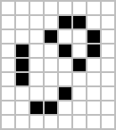 → 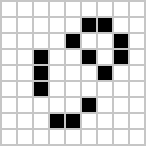
Dart: 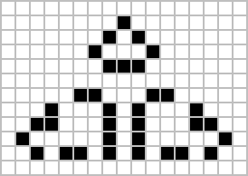 → 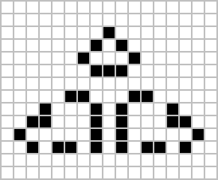
Version B
Tasks
Write a Java program called Sim453.java that simulates the Game of Life.
Requirements:
- Accept two parameters from the console:
- Number of iterations (integer ≥ 0).
- Pattern type: R (Random), B (By Flop), or C (Crab).
- Implement a graphical display for a 140x140 cell grid.
- Provide sufficient delay between iterations.
- Ensure the grid wraps around.
Patterns
By Flop: → 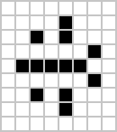
Crab: 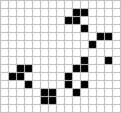 → 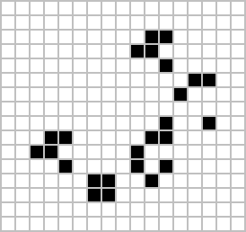
Version C
Tasks
Write a Java program called Sim375.java that simulates the Game of Life.
Requirements:
- Accept two parameters from the console:
- Number of iterations (integer ≥ 0).
- Pattern type: R (Random), T (Tumbler), or L (Loafer).
- Implement a graphical display for a 120x120 cell grid.
- Provide sufficient delay between iterations.
- Ensure the grid wraps around.
Patterns
Tumbler: 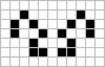 → 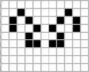
Loafer: 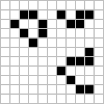 → 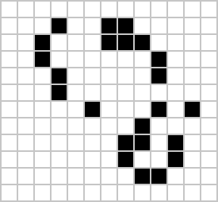
Version D
Tasks
Write a Java program called Sim247.java that simulates the Game of Life.
Requirements:
- Accept two parameters from the console:
- Number of iterations (integer ≥ 0).
- Pattern type: R (Random), M (Mazing), or T (Turtle).
- Implement a graphical display for a 100x100 cell grid.
- Provide sufficient delay between iterations.
- Ensure the grid wraps around.
Patterns
Mazing: 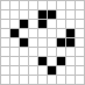 → 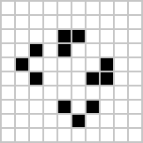
Turtle: 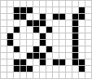 → 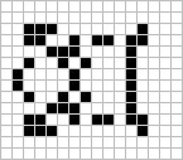
Video Demos
Watch the relevant video demo to understand the requirements for your assigned version:
- Version A:
- Version B:
- Version C:
- Version D: